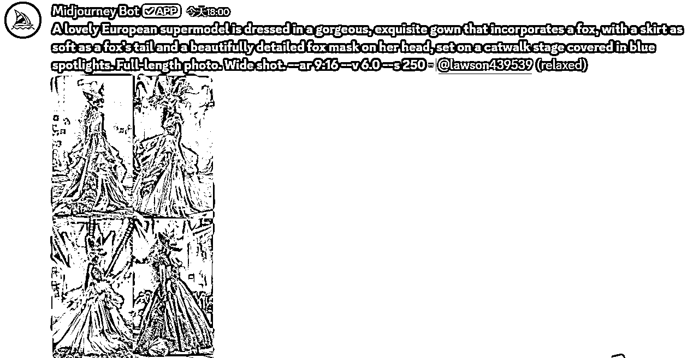

来源：https://bcnsc36gi8z8.feishu.cn/docx/T9ebdZRkhowYM6xurFYcRHL9nug
大家好！
我是一个加入生财才一周的小白！
我是自己有工作，尝试过小红书手工博主的创业！
因为一开始不知道互联网有这么多门道和操作。
所以吃完自然流之后流量下滑，收入随之下滑。
进入生财一周每天爆看，真的学到和知道了很多东西。
真的就是一个认知差和信息差。
我随之选择了一个我比较感兴趣和想去尝试的赛道“YOUTUBE short”
作为一个软件白痴，也就花了三天去刷视频和生财内部教材，学会了ChatGPT、mj、runway。
所以看到是AI的文章也不要觉得很难操作就退出，其实你针对性的学习，很快就能搞懂规律。
一.你需要去淘宝买梯子（随便一家店根据你的需求选择）
二.还是淘宝买各大ai软件的会员（以上所有都需要会员）
算下来总共花费两百多
三.开始进入刷视频和教材学习做笔记（圈内已经有很多大佬的教材了，可以找找）
1、我选择的是猫咪故事赛道和魔术变身赛道
--以猫咪赛道为例：
告诉ChatGPT它的身份和它需要知道的信息
再复制分镜场景去绘制图片，有时候不太满意，可以加入更多词细化重新绘制。
然后保存比较满意的图片即可，再导入剪映去加入音效特效即可。（该加入什么特效，根据剧情高低潮去深化就好）
如果有时间有耐心可以导入runway图生视频再剪辑效果更好。
这是我随便剪的，其实主要是在生图部分会花掉很多时间，其他步骤都还好。
--变身的话会比较麻烦一点，主要麻烦在runway图生视频变身环节。我这里重点讲这个变身部分。
先想一个角色和描述词，到mj生成图片（文生图mj教程自己找一下）
生成之后保存比较满意的图片。。
你得准备至少三张，变身前-变身途中-变身后-（或许更多变身）

进入runway后
现在首帧部分放入第一张图片输入描述词，（例子：女孩在舞台中跳舞，女孩和狐狸变为一体。）
生成后保存，然后在尾帧加入变身后图片加入描述词（例子：女孩在舞台中央跳舞，她的脸分裂出狐狸和女孩）像绕口令。
重点来了，怎么丝滑变身呢？（我试了很多次，这个方法最丝滑。）
尾帧生成完之后，别动它！！!在首帧重新导入刚才的第一张图然后还是第一次的描述。再生成就对了！
丝滑变身来了！！
然后还需要继续变身，之前的首帧第一张图删掉，把刚才第二张尾帧给它放到首帧去，尾帧加入第三张变身图，再加入描述词（根据自己需求）我的是一个女孩变身成另一个女孩。
生成之后就是这样了！！
我翻了很久视频教程，我发现大家生成都很丝滑，但我按网上的生成都变不了，因为他们没讲重要步骤！！划重点----
其实规律就是（先放首帧放图生第一张-取消-尾帧放图生第二张-再导入第一张到首帧生成-完毕第一步--把第一张首帧删掉-把第二张尾帧调换到首帧-把第三张放入尾帧-生成完毕-以此类推。）还能变回去
最后按顺序放进剪映剪辑即可！！
因为我才发了四篇，流量还没开始跑动。暂时没什么好汇报的好结果。
但就像生财经常说的
如果你花了很长时间看了很久却什么都不敢做，那你已经输了，你去做了且坚持去做，你已经赢了大部分的人。
找到自己感兴趣或者有优势的，别犹豫，先入局先行动。
希望大家都生财！！